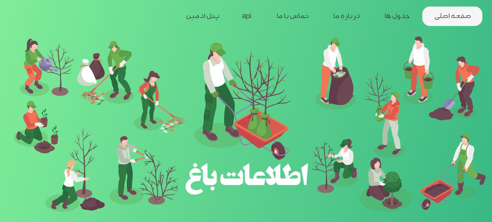
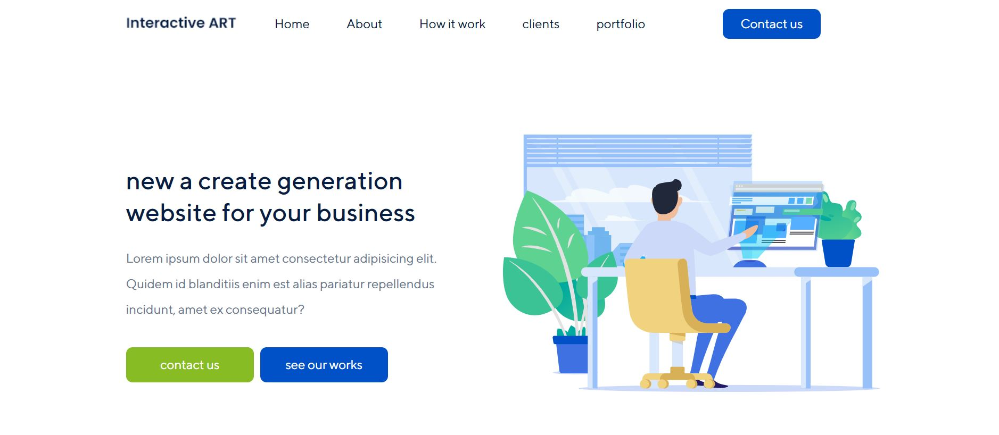
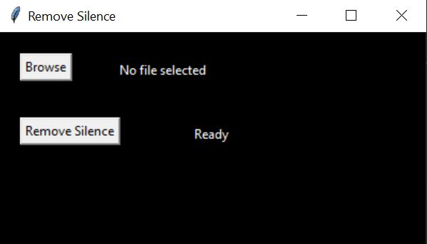
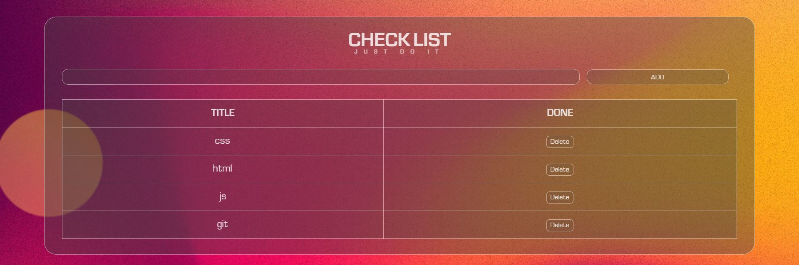

Translator using API for Farsi to English

This code creates a click event for an element with the ID 'translate-btn'. When the user clicks on this button, a function is executed that assigns three initial variables using the document.querySelector method: sourceLanguage: the source language (original text) entered in the element with the ID source-language. targetLanguage: the target language (translated text) entered in the element with the ID target-language. sourceText: the text entered by the user in the element with the ID source-text. Then, using the fetch() function, an inline request is sent to the Google Translate API. The API address is added to the request as follows This address allows you to translate the sourceText into the target language using sourceLanguage and targetLanguage. The response returned by the API for this request contains a three-dimensional array that includes the translated text. In this code, the translated text is displayed in the element with the ID target-text. If you want to put this code on GitHub, you can create a file named translate.js in the js folder and include the above code in it. Then, in your HTML file, add the translate.
My first backend project with Django
this website create with django,JavaScript,html,css
This project primarily focuses on strengthening the backend and includes an admin panel for creating new posts or tables and assigning values. It also has an API, and each table has its own API that returns a JSON file upon request. This project utilizes HTML, CSS, and JavaScript. You can view this project on my GitHub.
Ostad Helmi's site
this website create with grid for master nona helmi
This is a Sads project that I did while learning Flexbox and finally made it responsive
Website designed with Flexbox
this website create with flexbox
This is a Sads project that I did while learning Flexbox and finally made it responsive
remove silence from audio
This code defines a function called remove_silence that takes two file paths as input: input_file_path, which is the path to the audio file from which the silences will be removed, and output_file_path, which is the path where the resulting audio file will be saved. The function first loads the audio file using the AudioSegment class from the pydub library. It then calculates the average dBFS level of the audio file and sets the silence threshold to this value. The minimum silence length is calculated based on the length of the audio file and set to 5% of its total duration. The detect_nonsilent method from the pydub.silence module is used to split the audio into non-silent parts based on the silence threshold and minimum silence length. Finally, the function concatenates the non-silent parts of the audio that are longer than the minimum silence length using the AudioSegment.empty() method and exports the resulting audio to the specified output file path in WAV format using the export method. Overall, this code removes silences from an audio file and saves the remaining audio to a new file.
checklist
The first small project I did was to meet my needs, so I decided to start this project
Since I needed to write my work in a checklist and I am very interested in working with the computer, I decided to make a checklist and later I decided that it should be a web application that can be on my phone and on the system. After it was made and I saw a lot of interest from people around me to use this web application, I decided to make a more beautiful appearance for it, which took about a day, but in the end it was user-friendly, and now nearly ten of my close friends are using it. They use the online checklist and I am satisfied. I am also satisfied and happy with this welcome
my wbesite
My first frontend project with html and css

Recently, in order to get myself more involved in coding and to create a resume and to have some work samples, I decided to create my own website or a blog and post content on it, both from my own work and from what the site provides for others. It will be useful because this will also make me code more and I can be daily and post my work samples here.